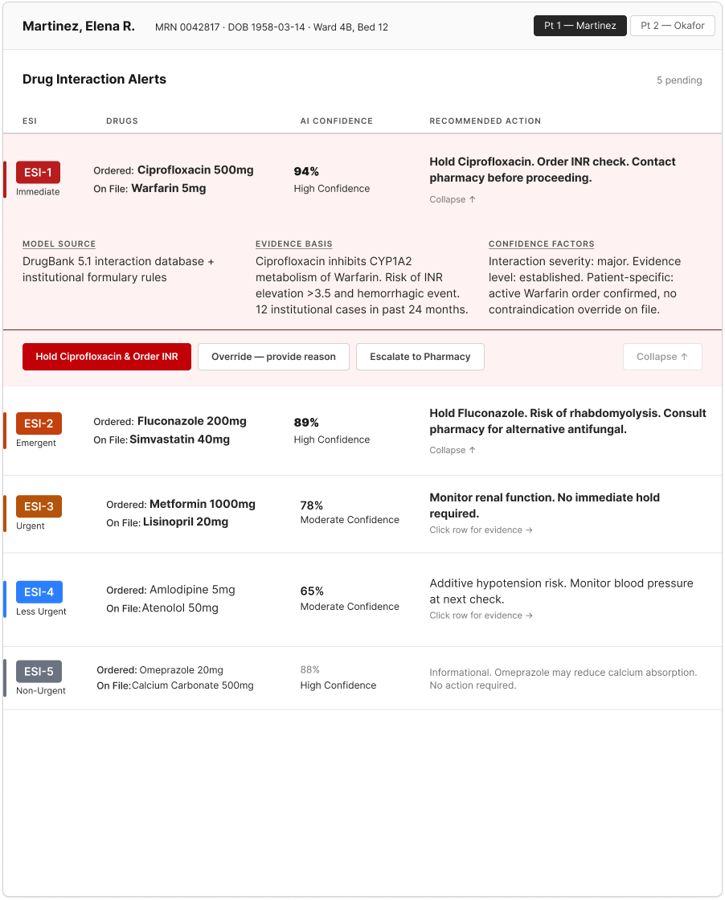
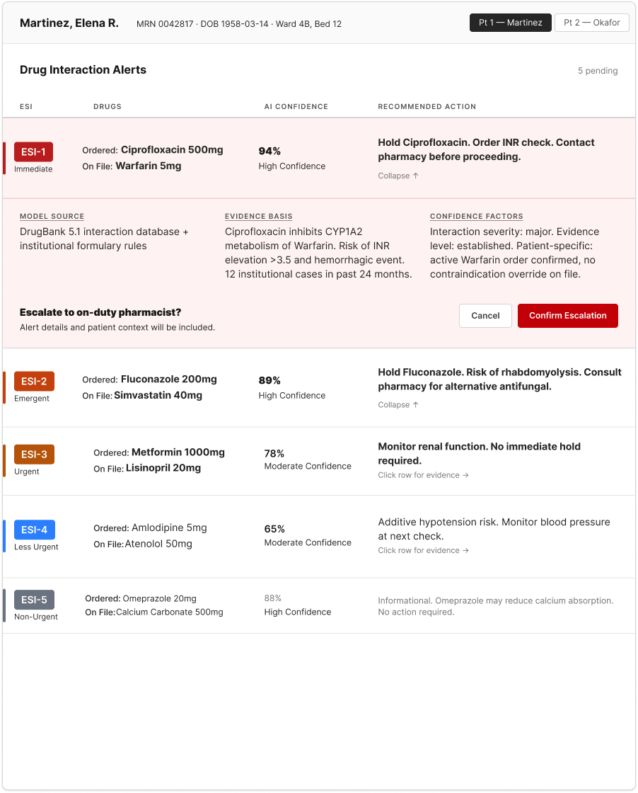

Case Study
Physicians override 95% of drug-interaction alerts, across 18,354 medication orders at two hospitals, with no improvement since the Meaningful Use era began. (Bryant et al., Applied Clinical Informatics, 2014)
Click through the Round 1 triage table above, or open it in Figma →

The ESI-1 alert, expanded. Round 1 design: Hold is styled primary; nothing states the AI's recommendation.

The Escalate confirmation step. Screenshots are Round 1; the Round 2 fix (Escalate primary, stated recommendation) lives in the decision log below, not yet re-exported as a screenshot.
30-second summary
Problem
Hospitalists override 95% of AI drug-interaction alerts because every alert looks the same regardless of severity.
Approach
Synthesized 18 clinical sources (no primary access to hospitalists), then designed and tested with 3 RN proxy testers.
Key decision
A triage table with ESI severity tiers, AI confidence scores, and friction that scales with the risk of the action.
Status
Both rounds complete. Round 1 found the gap (0% chose the right action); Round 2 closed it (100%, SUS 82.5).
A note on method: I didn't have access to practicing hospitalists for generative interviews, a gated clinical domain, out of reach for a solo junior researcher. The persona and problem frame are built from 18 peer-reviewed and expert sources instead. Evaluative testing (Useberry, originally built in Maze, plus SUS and NASA-TLX) ran with an initial panel of five proxy testers narrowed to three RNs, the closest available proxy to a practicing hospitalist.
Hospitalists handle the highest volume of daily medication orders in inpatient care, and they're the primary recipients of drug-interaction alerts. Every alert presents at identical visual priority regardless of severity: no position, size, or color signal separates a life-threatening interaction from a routine advisory.
39-fold
antibiotic overdose in a 2015 UCSF case, after a physician and pharmacist both overrode a critical alert that "looked exactly the same" as routine ones.
216+ deaths
in the U.S. (2005–2010) tied to alarm fatigue, per a Boston Globe investigation.
187/day
alerts per patient at UCSF ICUs, almost all clinically insignificant — 2,507,822 unique alarms across five ICUs in one month.
+13% risk
per interruption during medication administration. Four interruptions doubles the rate of errors likely to cause permanent harm or death.
The Joint Commission issued an urgent alarm-safety directive in 2013 (updated 2016), naming alarm-related problems a top health-technology hazard. (The Joint Commission 2013/2016)
The design implication: volume alone isn't the problem. Uniform visual design makes every alert look equivalent, training clinicians to ignore all of them. A 95% override rate, where critical and routine alerts are visually indistinguishable, is a predictable outcome, not a user failure.
No preattentive signal separates a critical interaction from a routine advisory. The 95.1% drug-drug override rate is a measurable outcome of that failure, not clinician negligence.
Bigger than model accuracy itself, across 6,689 cardiovascular cases: how often a prediction got overridden anyway.
Drug identity, severity tier, and recommended action need to appear in the alert header itself, not behind navigation. One EHR that did this measured significantly lower clinician workload.
A systematic review of 2007 to 2017 literature found role-tailoring the single most effective structural fix, severity tiering the second. Cosmetic changes alone didn't move the needle.
Every alert is a row: severity, drug ordered vs. drug on file, AI confidence, recommended action, all visible without expanding. A card list lets critical cards scroll off-screen; a severity-zoned layout breaks with zero critical alerts. Tables are already how clinicians read labs and med lists.
The panel borrows the Emergency Severity Index, already in a hospitalist's vocabulary, instead of a made-up "High/Medium/Low." "ESI-1" needs zero explanation mid-shift.
Strip the color out and the ESI-1 row is still identifiable by position, height, and weight. Color-only encoding fails for color-deficient clinicians and is unreliable under time pressure regardless.
The recommended action (Hold) completes in one click. Overriding requires picking a reason from five visible radio options, not a dropdown, before Confirm enables. Dropdown reasons are too coarse; clinicians pick the fastest option, not the accurate one.
Extracting alert fields with the Claude API, the first schema labeled fields drug_primary / drug_interacting. On a Warfarin + Ciprofloxacin case, that reversed the prescribing context. Renamed to drug_ordered / drug_on_file: self-explanatory, no inference required.
0 of 3 testers chose Escalate on a 94%-confidence alert (2 chose Override, 1 Hold). Nothing in the interface stated what the AI actually recommended. Round 2 makes Escalate the primary button and adds a one-line stated recommendation above it for confidence at or above 90%.
Unmoderated, three tasks, simulating a hospitalist reviewing AI-generated alerts, followed by SUS and NASA-TLX. (Platform switch and panel size are in the method note above.)
All 3 testers found the critical alert first and acted without prompting (Task 1, avg 127.2s). None chose Escalate once AI confidence was on screen (Task 2): 2 chose Override, 1 chose Hold. Task 3 completed at 2 of 3; the third dropped off before the override-reason form, an unconfirmed n=1 finding worth watching in Round 2.
Round 1 → Round 2 (n=1)
Round 2 closed at n=1 — a strong directional signal that the stated-recommendation fix removed the specific gap Round 1 found, not proof it holds at scale. One respondent isn't a validated trend, and a properly powered Round 2 is the honest next step if this ever gets built past a portfolio piece.
The drug_primary / drug_interacting naming wasn't caught by looking at the UI. It surfaced only when I traced the model's output against the clinical scenario and asked which drug a hospitalist would expect first. The exact panel meant to reduce override-by-confusion would have introduced a subtler version of the same confusion. Schema review needs the same scrutiny as visual review, against a real scenario, not an abstract field list.
Testers didn't converge on the same wrong answer (2 Override, 1 Hold), which killed my first theory that Override was styled too temptingly within an hour. The real gap: the confidence score sat in an evidence panel, disconnected from the button row. When two different Task 1 behaviors converge on the same Task 2 miss, the shared cause is the interface, not either tester's judgment.
Every citation above links here. 18 sources reviewed in total; these are the ones that directly shaped a decision on this page.